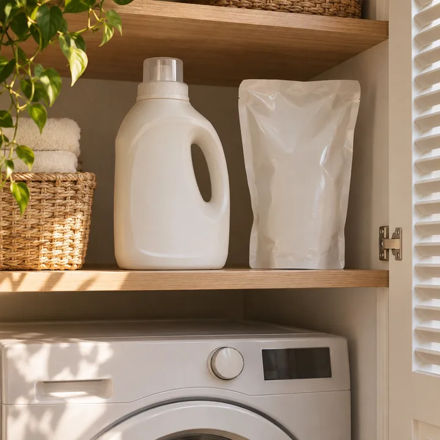

Come controllare le scorte di detersivo prima della spesa
Controlla il flacone aperto e le ricariche prima di aggiungere il detersivo alla lista.

Controlla il flacone in uso e la scorta
Metti il detersivo in uso e le scorte in un posto riconoscibile. Conservali nelle confezioni originali e fuori dalla portata dei bambini. Prima di uscire, controlla quanto resta e guarda se hai già una confezione chiusa. Se il flacone è quasi vuoto ma hai una ricarica, puoi rimandare l’acquisto.
Segna il detersivo quando apri l’ultima scorta
Quando apri l’ultima confezione, aggiungi il detersivo alla prossima lista. In EatMeFirst puoi indicare tipo, quantità e ubicazione del detersivo come per gli alimenti. Le scorte, la lista e il salvataggio nel browser sono gratuiti, senza download o iscrizione.